7TECH — систематизация и развитие
B2B MDM-системы
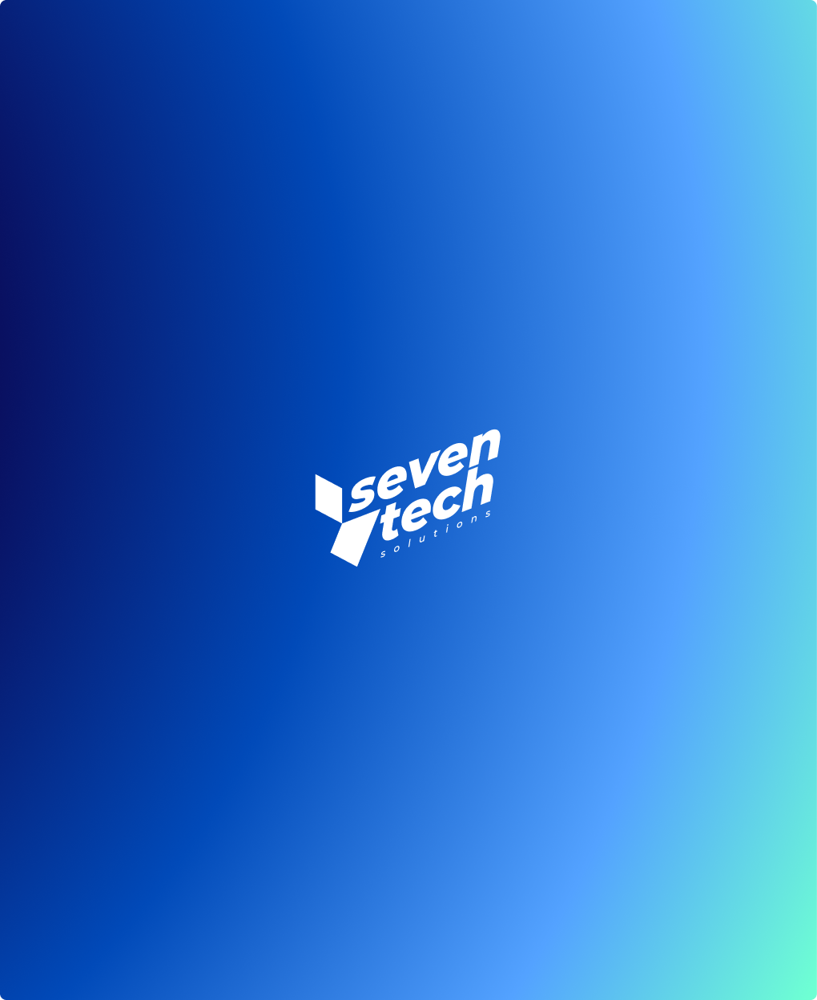
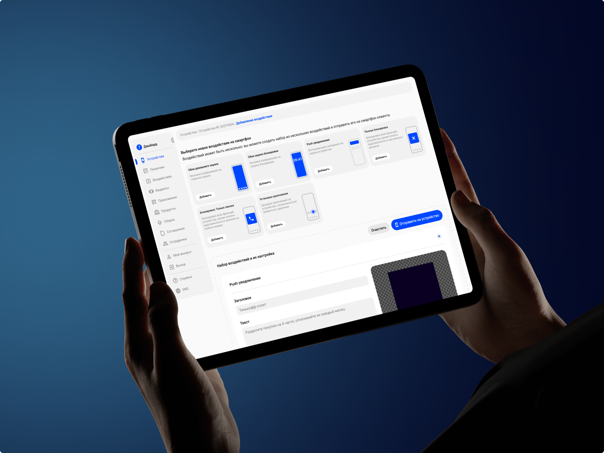
Содержание
О компании
7TECH разрабатывала решения для удалённого управления Android-устройствами и работала более чем в 19 странах через сеть из 150+ партнёров.
Контекст
Платформа использовалась в разных сценариях: от управления корпоративными устройствами до smart collection — контроля смартфонов, выданных в рассрочку. Клиенты могли управлять устройствами удалённо, настраивать ограничения, устанавливать приложения, отправлять уведомления, создавать собственные конфигурации устройств и автоматизировать сценарии управления.
Я присоединился к проекту в момент технического рефакторинга платформы. Компания готовилась к дальнейшему развитию продукта, но существующий интерфейс и процессы проектирования уже плохо масштабировались.
На старте меня пригласили как второго дизайнера для систематизации интерфейсов и снижения потерь между дизайном и разработкой. Со временем я стал основным дизайнером продукта и начал отвечать не только за UI, но и за развитие новых сценариев системы.
Выявленные проблемы
Основной проблемой был накопившийся UX и дизайн долг. Макеты собирались без системного подхода: не использовались компоненты и auto-layout, одинаковые элементы постоянно дублировались вручную, а часть поведения интерфейса фронтенд-команда определяла уже по ходу разработки. На синхронизацию между дизайном и разработкой уходило много времени — любое изменение тянуло за собой обсуждения, уточнения и повторные дизайн-ревью.
Интерфейсы были перегружены декоративынми элементами, вместо иерахичной системы отступов, из-за чего длинные страницы начинали «рябить». Структура экранов читалась слабо: блоки конкурировали между собой, таблицы и фильтры плохо масштабировались и не отделяли важное от второстепенного. Многие настройки существовали только в текстовом виде, без визуализации. В результате система требовала постоянного «чтения интерфейса».
Вместо узнаваемых повторяющихся паттернов интерфейс постоянно менялся в деталях: например, хедер присутствовал не на всех страницах, и менялся структурно. Первостепенные и второстепенные кнопки отличались от страницы к странице, как и ховер состояния.
Боковое меню было смесью сущностей и действий: рядом с разделами находились кнопки «создать воздействие», «создать сборку», «создать виджет». Пользователю приходилось сначала понимать внутреннюю структуру системы, а уже потом — искать нужный сценарий.
Было
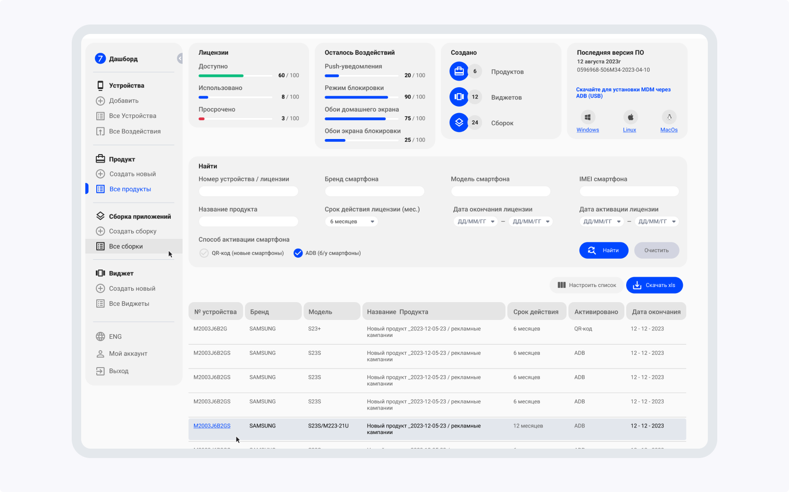
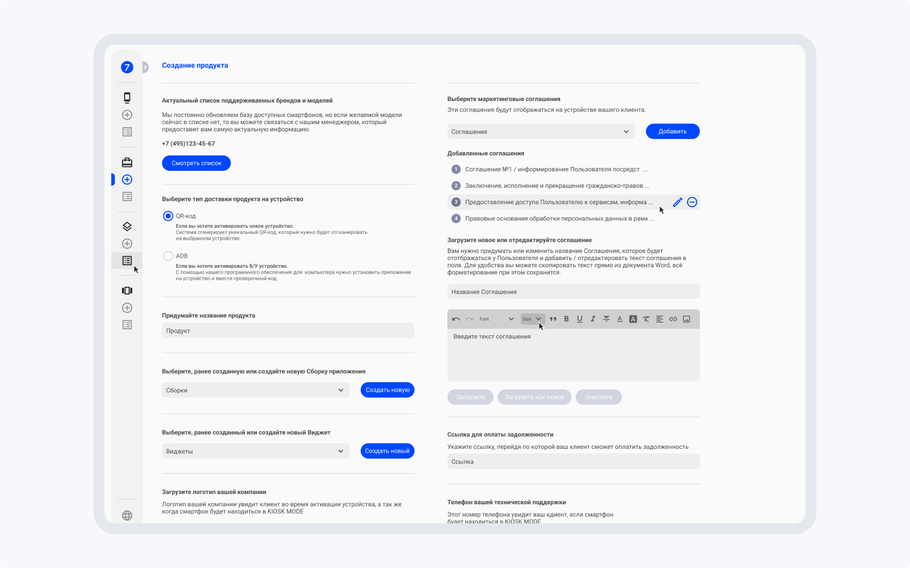
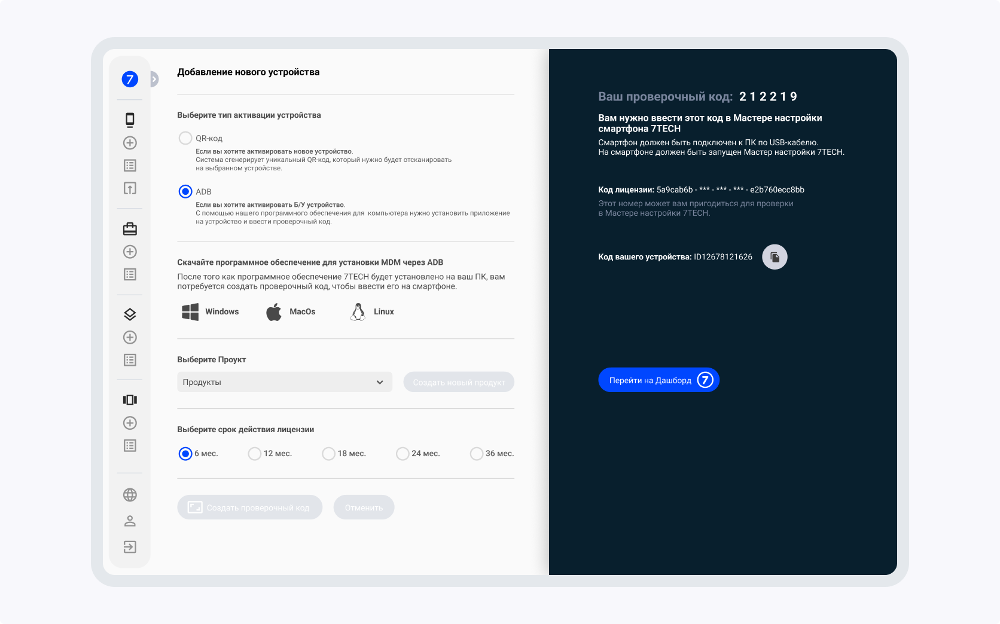
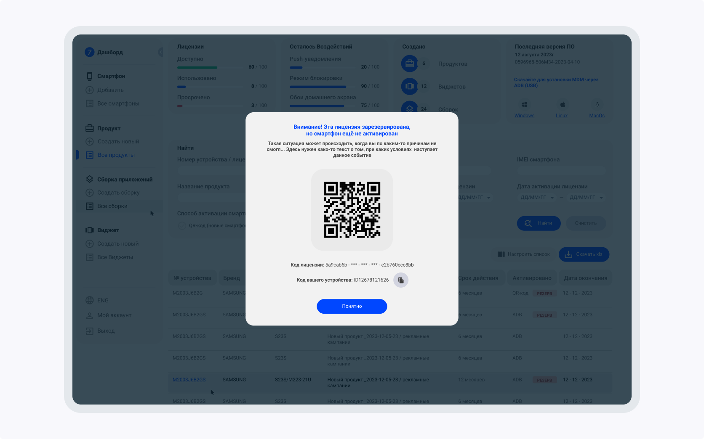
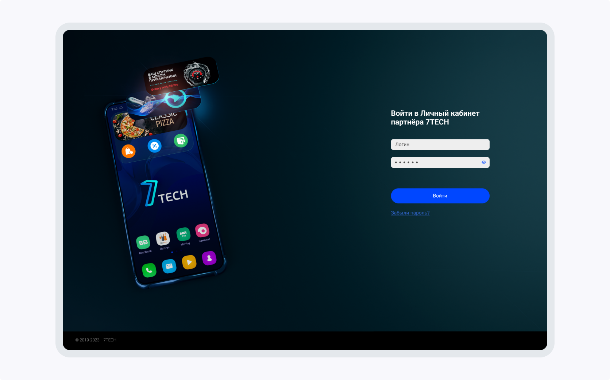
Систематизация UI и работа с фронтендом
Я пересобрал интерфейс в более системное состояние: почистил лишние сущности в макетах, нормализовал сетку, вертикальный ритм, типографику и систему отступов. Практически все базовые элементы были переведены на auto-layout и компонентный подход с состояниями и переиспользуемыми паттернами.
Вместе с фронтенд-командой мы согласовали систему дизайн-токенов и общие ограничения интерфейса. Перестали плодить новые стили и начали двигаться внутри понятной системы размеров, состояний и визуальных правил.
В результате интерфейс стал значительно консистентнее, а взаимодействие между дизайном и разработкой — быстрее и предсказуемее. Многие вопросы, которые раньше постоянно всплывали на дизайн-ревью и в процессе вёрстки, просто исчезли за счёт появления общей системы.
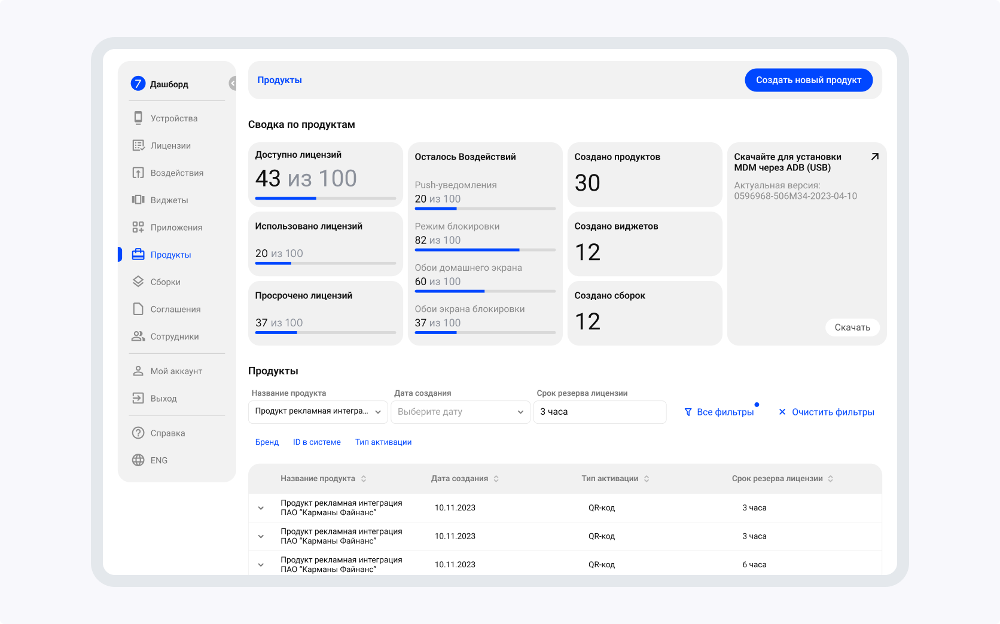
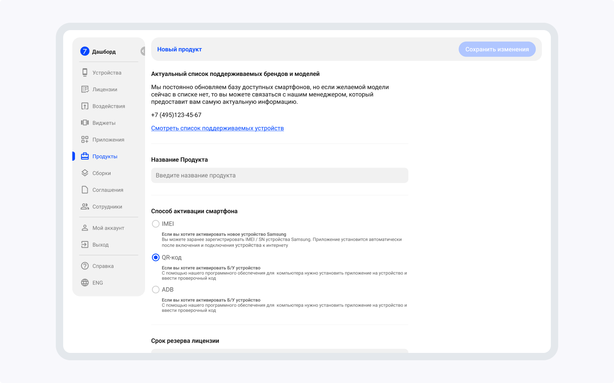
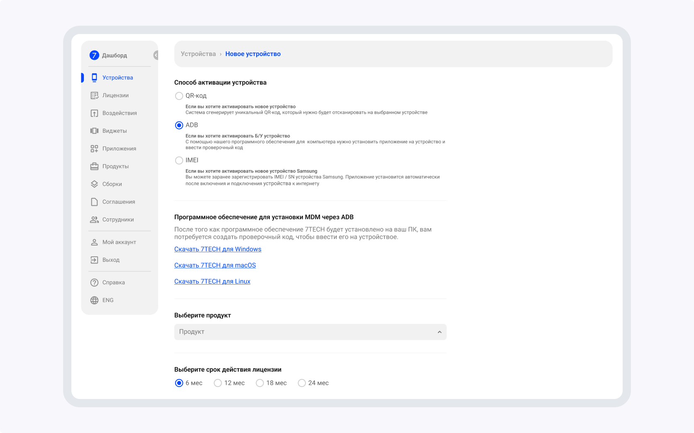
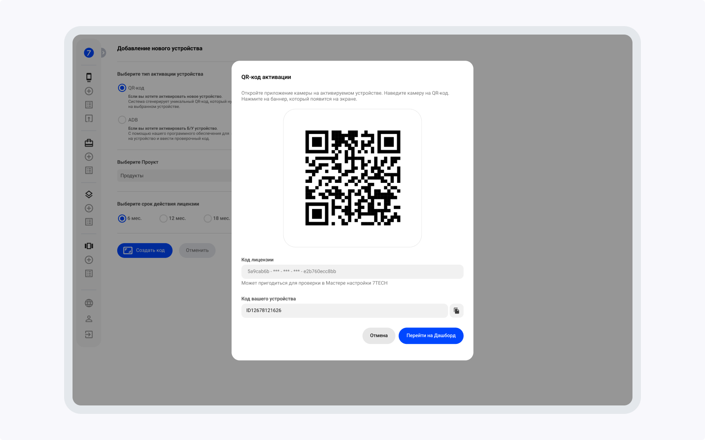
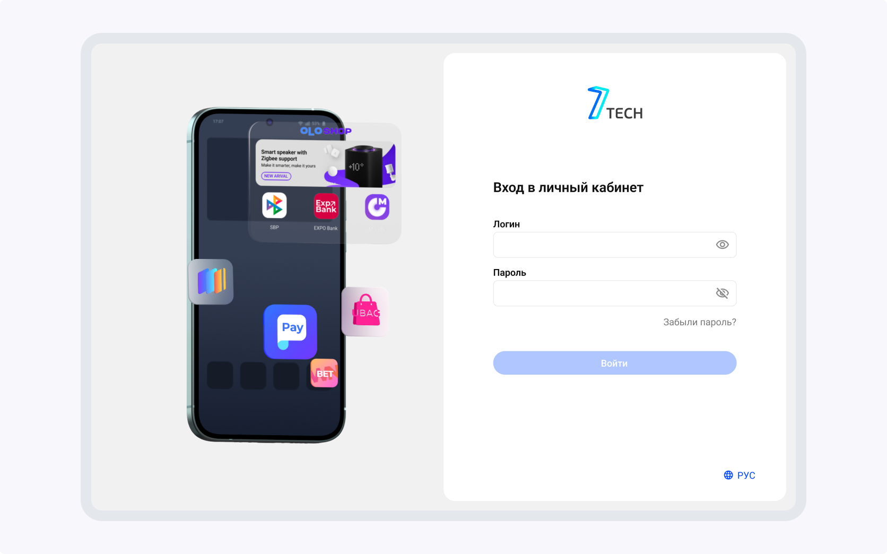
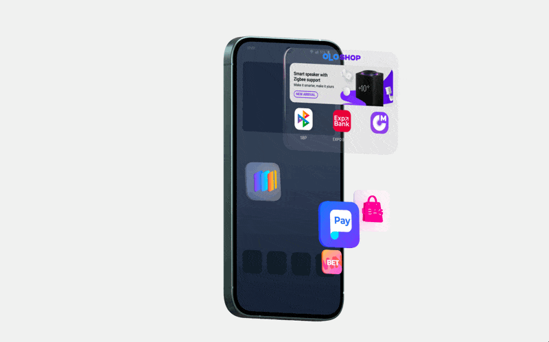
Таблицы и фильтры
В ходе пересборки, отдельно переработал фильтры и таблицы. Фильтрация стала компактнее и чище визуально, а активные фильтры начали отображаться тегами. Это упростило работу с большими таблицами устройств и продуктов.
В таблицах, вместо разрозненных ячеек связанные сущности начали группироваться вместе, как, например, бренд и модель устройства. За счёт этого таблицы стали компактнее и информативнее: на той же площади помещалось больше полезной информации.
Дополнительно появились раскрывающиеся строки с подробной информацией, куда удалость вынести вторичную информацию, а позже и алерт сообшения и иную коммуникацию. В предыдущей версии это было невозможно реализовать из-за структуры самой таблицы.
Таблицы и фильтры
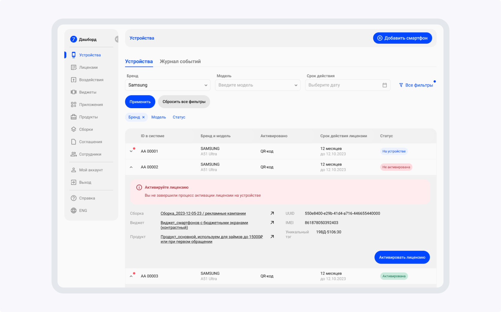
Переработка отображения сложных сценариев
Многие процессы строились вокруг знания терминов платформы и запоминания контекста. Пользователь должен был помнить, как называется ранее загруженный файл, или что скрывается за определенным названием воздействия.
Я начал постепенно добавлять визуальный контекст и превью в местах, где это было критично для понимания сценариев. Например, воздействия стали отображаться как набор визуальных блоков с понятными типами действий, а не как длинная техническая форма.
Похожим образом были переработаны виджеты и медиа-элементы. Вместо простых имён файлов пользователь начал видеть превью загруженных элементов и быстрее ориентироваться в уже созданном контенте.
Это не меняло саму бизнес-логику платформы, но заметно снижало когнитивную нагрузку и делало систему дружелюбнее без радикального изменения привычных процессов.
Скрины отправки воздействий до после, страница виджетов до после
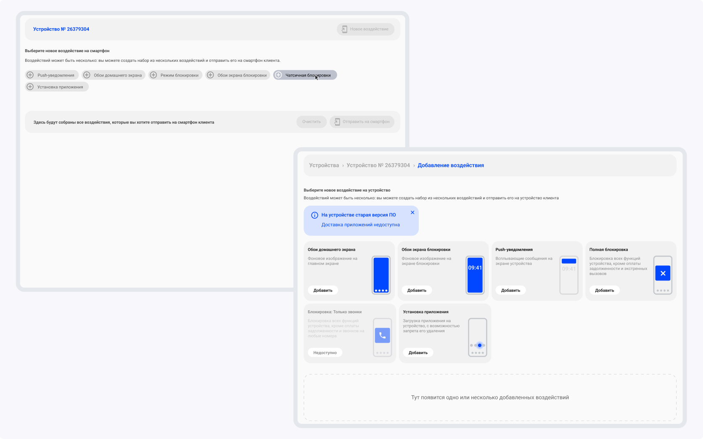
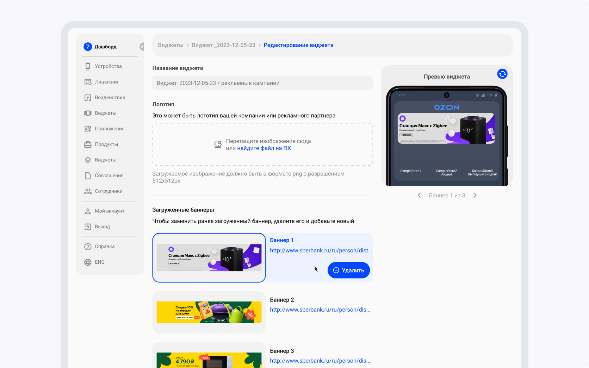
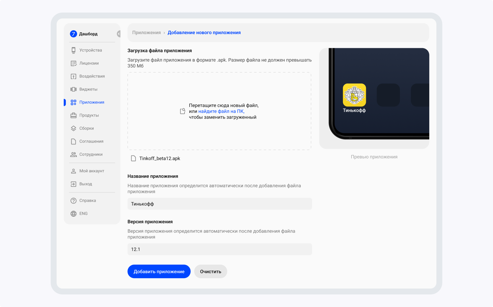
Мобильная версия
Параллельно, я спроектировал мобильную версию для ключевых сценариев управления устройствами. При этом мобильный интерфейс не был просто уменьшенной копией десктопа. Например, таблицы устройств были полностью перепридуманы под мобильный контекст и превратились в карточный формат с приоритетом ключевой информации и быстрых действий.
Это позволило сохранить управляемость системы даже на небольших экранах.
Дополнительно мобильная версия помогла унифицировать сценарии и структуру сущностей продукта — многие паттерны пришлось упростить и привести к более консистентному виду, что позже улучшило целостность интерфейса и в десктопной версии.
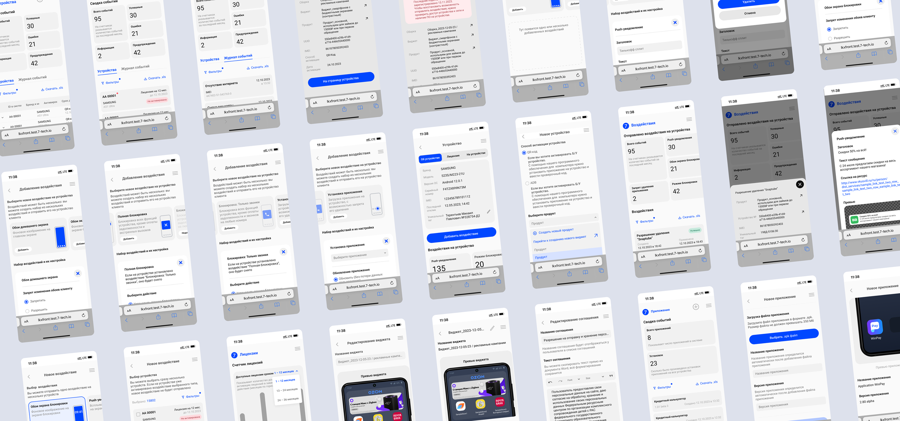
Обновление логотипа
Уже в период моей отработки после решения об уходе появилась задача срочно переработать логотип компании. Сам товарный знак уже был зарегистрирован, но текущую версию логотипа начали использовать позже, и именно к ней появились претензии — основная проблема была в прямом использовании цифры «7». Дополнительно обязательным условием стало использование полного названия Seven Tech Solutions, что заметно усложняло задачу.
Новый логотип я построил вокруг абстрактной изометрической формы с негативным пространством. Она всё ещё ассоциировалась с «7», но уже не считывалась как прямое изображение цифры. Сам знак стал проще, легче масштабировался и лучше работал внутри интерфейсов, favicon и презентаций.
Дополнительно логотип ушёл от жёсткой градиентной привязки и стал монохромным по умолчанию. Это сделало айдентику гибче: знак можно было адаптировать под разные носители и контексты, перекрашивая по ситуации. Базовым вариантом стала белая версия логотипа на фирменном системном синем градиенте.
Логотип до после
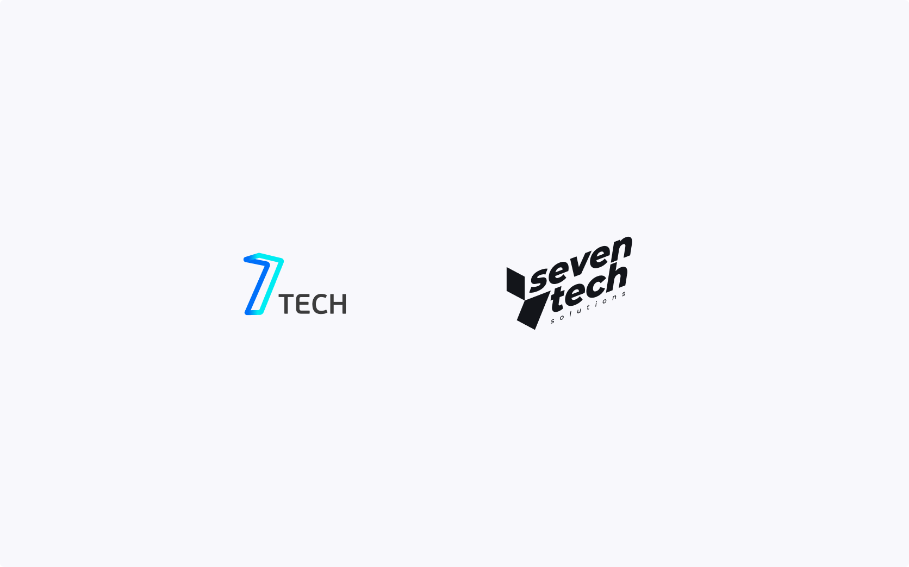
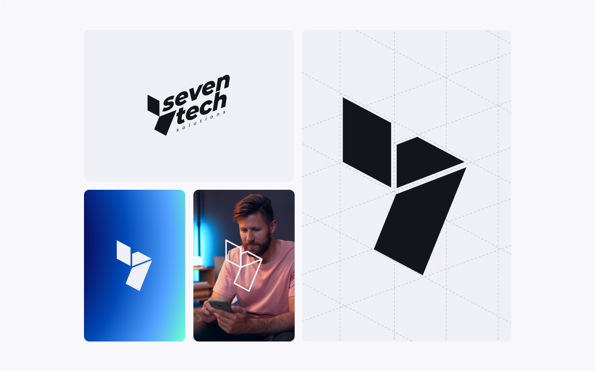
Результат работы и развитие продукта
По мере развития платформы моя роль сместилась от систематизации интерфейсов к проработке новых сценариев и архитектуры продукта. Во время работы появились новые разделы: управление сотрудниками, ролями, лицензиями, лимитами операций и новыми типами конфигураций устройств.
За время работы удалось:
- систематизировать UI и выстроить переиспользуемую компонентную систему
- снизить потери между дизайном и фронтендом
- сделать интерфейс заметно дружелюбнее без радикального слома пользовательского опыта
- переработать навигацию и подготовить продукт к дальнейшему масштабированию
- улучшить читаемость сложных сценариев управления устройствами
- спроектировать мобильную версию для ключевых сценариев работы
- обновить айдентику и логотип компании под новые требования
После моего ухода, по словам коллег, компания ещё продолжительное время не нанимала отдельного продуктового дизайнера. За счёт выстроенной системы компонентов и паттернов интерфейс продолжал масштабироваться достаточно органично: аналитики и фронтенд-команда уже мыслили готовыми сущностями и могли собирать новые сценарии внутри существующей системы без постоянного дизайн-сопровождения.